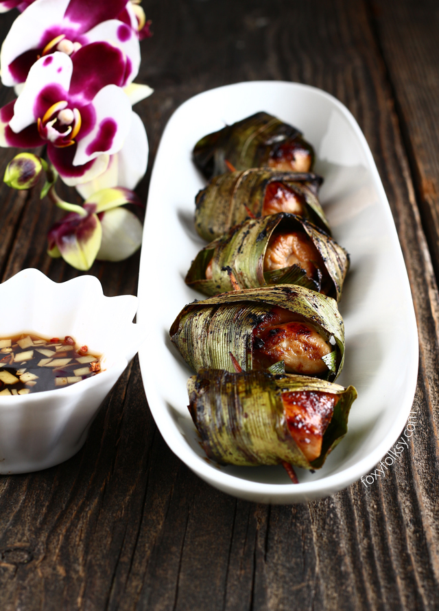

Ingredients
- 500g (1 lb) chicken thigh or breast fillets, cut into 20 bite-sized pieces
- 20 pandan leaves
- 20 toothpicks
- vegetable oil for deep frying
Marinade
- 6 garlic cloves
- 1 tsp whole white peppercorns
- 3 tbsp oyster sauce
- ½ tsp white sugar
Dipping Sauce
- 3 tbsp soy sauce
- 2 tbsp sweet dark soy sauce
- ¼ cup white sugar
- ¼ cup water
What is Chicken Pandan?
Chicken Pandan is a delicious Thai chicken dish, where marinated chicken pieces are wrapped in screwpine leaves.
"What came first, the Chicken or the Egg? I don't care, I eat both!"
Steps
- To make the marinade, use a mortar and pestle to pound the garlic and peppercorns to a rough paste. Mix the paste with the oyster sauce and sugar. Add the marinade to the chicken and mix until well combined. Wrap each piece of chicken with a pandan leaf. Secure with a toothpick. Chicken can be marinated and wrapped up to a day in advance.
- To make the dipping sauce, combine the ingredients in a small saucepan over medium-high heat. Simmer for 4-5 minutes or until thickened slightly. Pour into a small serving bowl (sauce will thicken more as it cools).
- Fill a saucepan or wok to about 1/3 capacity with the vegetable oil. Heat over high heat. The oil is hot enough at 165°C/325°F or when a wooden spoon dipped into the oil forms small little bubbles.
- Fry the chicken pieces in batches in the hot oil for 4-5 minutes or until dark golden and cooked through. Drain on paper towel and serve with the dipping sauce.